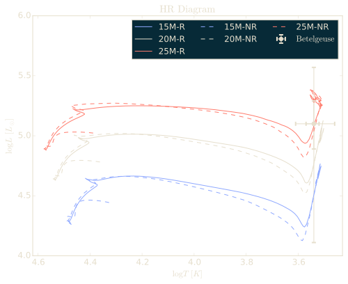
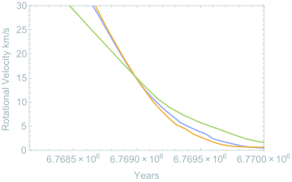
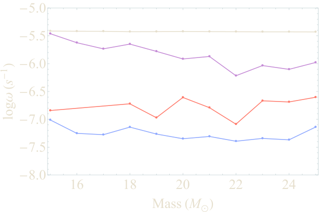

The project
Betelgeuse (Alpha Orionis) is a red supergiant, a massive star in the final stages of its life and expected to undergo a supernova (Branch and Wheeler, 2017). The Betelgeuse Project, led by J. Craig Wheeler, aimed to determine indicators for the timing of the star's explosion. The project used stellar evolution models to identify the current evolutionary stage of the star and to deduce properties of its interior. I produced simulations of supernova progenitors for the project using the MESA stellar evolution code. A suite of models ranging from 15 to 25 solar masses, both with and without rotation, was compared to Betelgeuse's observed luminosity, temperature and radius.

Without rotation, the models reproduce the observed luminosity, temperature and radius within the larger uncertainties without much difficulty, although agreement within 1σ is harder to find. Rotation is what makes the star puzzling.
A 20 solar mass model
A star that spins too fast
A star should slow down as it swells into a red supergiant, the way a figure skater slows down when she opens her arms, since both conserve angular momentum. The surface of Betelgeuse appears to rotate at about 15 km/s. In the models, this velocity is reached only briefly, as the star first arrives at the base of the red supergiant branch after crossing the Hertzsprung gap. The models that fit the luminosity, temperature, radius and rotation together sit at this short-lived point, in a window of about a thousand years, so it is unlikely that Betelgeuse happens to be there now. At the tip of the red supergiant branch, the models rotate at only about 0.1 km/s, for any reasonable initial rotation, about 150 times slower than Betelgeuse appears to.

Wheeler suggested that the additional angular momentum originated from a companion of approximately one solar mass, which Betelgeuse engulfed during its ascent along the red supergiant branch. This merger may also account for the ring of material observed approximately 7 arcminutes from the star. However, a past merger challenges efforts to reconstruct Betelgeuse's history and predict its future evolution.
We thought Betelgeuse had already swallowed its companion. It may still be outside. In 2024 two groups argued that the six year cycle in the brightness of Betelgeuse and in its velocity toward us comes from the orbit of a companion of about a solar mass, a little over twice the radius of the star from its center (Goldberg, Joyce and Molnár, 2024; MacLeod et al., 2025). It was probably imaged with Gemini North and named Siwarha (Howell et al., 2025), and early in 2026 its wake through the outer atmosphere of Betelgeuse was found with Hubble (Dupree et al., 2026). If MacLeod and his collaborators are right, tides from the companion are what spin Betelgeuse up, and the star will swallow it within the next ten thousand years or so.
Listening to the interior
In a second paper, we asked whether the interior of a red supergiant could be probed from its surface, through the waves that convection in the inner burning regions generates. We estimated the characteristic frequencies of the convective zones at two stages, core helium burning and off-center carbon burning, and how much of their power could reach the surface.

Waves from convection in the helium core would have periods of about 20 days, those from the helium burning shell about 10 days, and those from a carbon burning shell 0.1 to 1 day. In the most optimistic case, early in core helium burning, they could produce luminosity fluctuations of a few millimagnitudes at the surface, but the outermost layers of the envelope are likely to damp them strongly.
Papers
- The Betelgeuse Project: Constraints from RotationarXiv:1611.08031Journal
- The Betelgeuse Project II: AsteroseismologyarXiv:1805.10347Journal